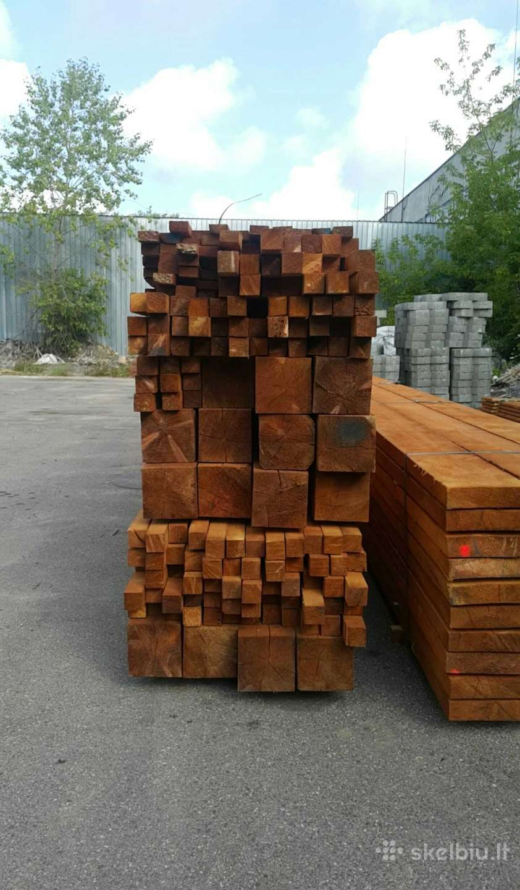

Welcome to mediena
Pirties mediena,mediena pirtims,mediena,mediena pirciai
2020.10.29 07:56Kaunas t el.: 8 657 61711 ; Vilnius t el.: 8 657 50074
Pусский Deutsch Lietuviškai English 0 Pradžia Apie mus Atsiskaitymas Pristatymas Garantijos Lizingas Kontaktai Blogas LT Naujienos Lauko pirtys Surenkamos pirtys Pirčių galerija
PIRTIES REIKMENYS
Atidaryti prekių sąrašą...
Pirties reikmenys Elektrinės krosnelės Malkinės krosnelės Krosnelių priedai Garinės pirties įranga Garo generatoriai Pirties mediena Medienos gaminiai Durys pirčiai Medžiagos įrengimui Pirties apšvietimas Pirties ventiliacija Pirties aksesuarai Surenkamos pirtys Pirtys bačkos Viskas pirtims Akcijos DovanosPIRTIES ĮRENGIMAS
Atidaryti visą sąrašą...
Pirties įrengimas Tradicinės pirties įrengimas Infra pirties įrengimas Dūminės pirties įrengimas Surenkamos pirtys Rusiškos pirties įrengimas Mobilios pirtys Pirties gultų įrengimas Pirties statyba Pirčių projektai Pirties statyba savarankiškai Pirties įranga Pirties mediena Turkiškos pirties įrengimasPIRČIŲ PROJEKTAI
Atidaryti visą sąrašą...
Pirčių projektai Pirčių projektai Mūsų įrengtos pirtys Pirties įrengimo schema Pirčių įdomybės Pirties interjeras Karkasines pirtys Pirtys Saunos Pirtis SaunaSTRAIPSNIAI
Atidaryti straipsnių sąrašą...
Straipsniai Sauna Pirties krosnelės, krosnys Infraraudonųjų pirtys Lietuviškos pirtys Pirties projektavimas Taisyklinga pirtis Pirties tipai I dalis Pirties tipai II dalis Pirties tipai III dalis Pirties tipai IV dalis Sveikos pirties ypatumai Bendrosios pirties taisyklės Patarimai pirties gerbėjams Pirčių nauda sveikatai Žadeitas Pirčių rūšys Pirties procedūros Pirties statyba Pirties reikmenys - įrankiai Pirčių projektavimas Šiuolaikinės pirtys Laikas pirtyje Kaip reikėtų elgtis pirtyje? Vantos pirtyje Pirčių reikmenys Pirties krosneles Pirties akmenys Pirties istorija I dalis Pirties istorija II dalis Pirties istorija III dalis Pirties istorija IV dalis Pirties istorija V dalis Pirties istorija VI dalis Pirties istorija VII dalis Pirties istorija VIII dalis Pirties istorija IX dalis Pirties aksesuarai Pirčių projektavimas Pirties įrengimasAPIE MUS
Daugiau informacijos apie mus...
Pradžia Mediena pirčiaiDailylentės ir gultai - pagrindinės medžiagos tradicinės pirties įrengimui. Nuo jų kokybės priklauso ir pirties funkcionalumo kokybė, ilgaamžiškumas. Kaip gamintojai, galime Jums pasiūlyti aukščiausios kokybės medieną pirtims, jos gaminius.
Dailylentės pirtims
+Mediena gultams
+Mediena karkasams
+Vidiniai kampukai
+Išoriniai kampukai
+Juostelės
+Durų apvadai
+Pirties mediena
4 10 12 20 28 40 Rezultatai 1 - 10 iš 323 Rūšiuoti pagal Prekės pavadinimas -/+ Gamintojo pavadinimas Prekės kaina Rikiavimas Gamintojas: Pasirinkite gamintoją Eos Harvia Lietuva Pradėti Ankst 1 2 3 4 5 6 7 8 9 10 Sekantis PaskutinisAbachi dailylentės 15x90; 1m² Nuo
Abachi mediena – viena iš geriausių medienos rūšių tinkančių pirčių vidaus apdailai ir gultams. Ji...
Prekės informacija 85,00 €Abachi dailylentės 15x90; ilgis 2,4m
Abachi mediena – viena iš geriausių medienos rūšių tinkančių pirčių vidaus apdailai ir gultams. Ji...
Prekės informacija 85,00 €Abachi dailylentės 15x90; ilgis 2,7m
Abachi mediena – viena iš geriausių medienos rūšių tinkančių pirčių vidaus apdailai ir gultams. Ji...
Prekės informacija 85,00 €Abachi dailylentės 15x90; ilgis 3m
Abachi mediena – viena iš geriausių medienos rūšių tinkančių pirčių vidaus apdailai ir gultams. Ji...
Prekės informacija 85,00 €Atlošas combi 1m' Nuo
Nugaros atlošas combi. Pagamintas is liepos ir termiškai apdorotos medienos (liepos arba drebulės)....
Prekės informacija 50,00 €Atlošas combi; ilgis: 1,0m
Nugaros atlošas combi. Pagamintas is liepos ir termiškai apdorotos medienos (liepos arba drebulės)....
Prekės informacija 50,00 €Atlošas combi; ilgis: 1,1m
Nugaros atlošas combi. Pagamintas is liepos ir termiškai apdorotos medienos (liepos arba drebulės)....
Prekės informacija 55,00 €Atlošas combi; ilgis: 1,2m
Nugaros atlošas combi. Pagamintas is liepos ir termiškai apdorotos medienos (liepos arba drebulės)....
Prekės informacija 60,00 €Atlošas combi; ilgis: 1,3m
Nugaros atlošas combi. Pagamintas is liepos ir termiškai apdorotos medienos (liepos arba drebulės)....
Prekės informacija 65,00 €Atlošas combi; ilgis: 1,4m
Nugaros atlošas combi. Pagamintas is liepos ir termiškai apdorotos medienos (liepos arba drebulės)....
Prekės informacija 75,00 €Abachi dailylentės 15x90; 1m² Nuo
85,00 €Abachi dailylentės 15x90; ilgis 2,4m
85,00 €Abachi dailylentės 15x90; ilgis 2,7m
85,00 €Abachi dailylentės 15x90; ilgis 3m
85,00 €Atlošas combi 1m' Nuo
50,00 €Atlošas combi; ilgis: 1,0m
50,00 €Atlošas combi; ilgis: 1,1m
55,00 €Atlošas combi; ilgis: 1,2m
60,00 €Atlošas combi; ilgis: 1,3m
65,00 €Atlošas combi; ilgis: 1,4m
75,00 € PlačiauAbachi dailylentės 15x90; 1m² Nuo
85,00 € PlačiauAbachi dailylentės 15x90; ilgis 2,4m
85,00 € PlačiauAbachi dailylentės 15x90; ilgis 2,7m
85,00 € PlačiauAbachi dailylentės 15x90; ilgis 3m
85,00 € PlačiauAtlošas combi 1m' Nuo
50,00 € PlačiauAtlošas combi; ilgis: 1,0m
50,00 € PlačiauAtlošas combi; ilgis: 1,1m
55,00 € PlačiauAtlošas combi; ilgis: 1,2m
60,00 € PlačiauAtlošas combi; ilgis: 1,3m
65,00 € PlačiauAtlošas combi; ilgis: 1,4m
75,00 €Pradėti Ankst 1 2 3 4 5 6 7 8 9 10 Sekantis Paskutinis
Puslapis 1 iš 33
Viskas pirtims
Elektrinės krosnelės Sawo krosnelės Narvi krosnelės Kota krosneles Harvia krosnelės Eos krosnelės Helo krosneles Tylo krosnelės Kastor krosnelės Mondex krosnelės Huum krosnelės Hehku krosnelės Misa krosnelės Magnum krosnelės IKI krosnelės Sentiotec krosnelės Valdymo pultai Papildoma įranga Malkinės krosnelės Narvi krosnelės Aito krosnelės Kota krosnelės Harvia krosnelės Lietuviškos krosneles Helo krosneles Kalvis krosnelės Stoveman krosnelės Misa krosnelės IKI malkinės krosnelės Skamet krosnelės Termofor krosnelės Kastor krosnelės Huum krosnelės Vienybė krosnelės Krosnelių priedai Garinės pirties įranga Garo generatoriai Mediena pirtims Medienos gaminiai Pirties durys Stiklinės durys Medinės durys Garinės durys Išskirtinės durys Medžiagos įrengimui Elektros prekės Izoliacinės medžiagos Pirties garsiakalbiai Lakai, aliejai pirtims Druskos sienelės Tvirtinimo detalės Pirties apšvietimas Pirties ventiliacija Pirties aksesuarai Surenkamos pirtys Pirtys bačkos Viskas pirtims Akcijos DovanosVartotojo sąsaja
Prisijungti / RegistruotisAkcijos
Visos akcijos
NAUJIENOS
Susisiekite
Kaunas: 8 657 61711
kaunas@pirciupasaulis.lt
Vilnius: 8 657 50074
vilnius@pirciupasaulis.lt
Pirties reikmenys
Elektrinės krosnelės Malkinės krosnelės Krosnelių priedai Garinės pirties įranga Garo generatoriai Pirties mediena Medienos gaminiai Durys pirčiai Medžiagos įrengimui Pirties apšvietimas Pirties ventiliacija Aksesuarai, priedai Surenkamos pirtys Kubilai Pirtys bačkos Viskas pirtims Akcijos Dovanos
Pirties įrengimas
Tradicinės pirties įrengimas Rusiškos pirties įrengimas Turkiškos pirties įrengimas Dūminės pirties įrengimas Pirties gultų įrengimas Infraraudonųjų spindulių pirtys Surenkamos pirtys Mobilios pirtys
Pirčiu projektai
Pirčių projektai
Mūsų įrengtos pirtys
Straipsniai apie pirtis
Pirties įrengimo schema Pirties konstrukcija
Pirčių įdomybės
Pirties interjeras
Kontaktai
UAB "ELUCIDA" Pirčių pasaulis
Kaunas Draugystės g 19.
Vilnius Žirmūnų g. 68,
Tel. 865761711 Kaunas
Tel. 865750074 Vilnius
El. paštas: kaunas@pirciupasaulis.lt vilnius@pirciupasaulis.lt
Informacija
Naujienos
Apie mus
Pristatymas Atsiskaitymas Garantijos
Lizingas Kontaktai
Draugaukime
FACEBOOK TWITTER INSTAGRAM PINTEREST GOOGLE+
Pirties reikmenys | Pirties įrengimas | Pirčių projektai
Visos prekės pirtims ir jų įrengimui
Aukščiausia kokybė, stilingas dizainas ir naujausios technologijos
©Kopijuoti draudžiama 2019 | www.pirciupasaulis.lt
Pareiškimas apie slapukus UA-72377765-1
